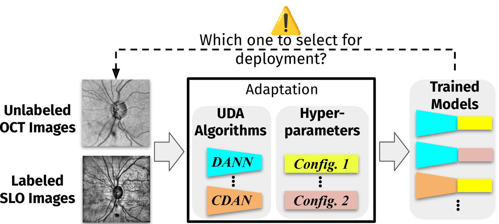

Click outside or press Esc to close
A capable adapted model usually exists. The hard part is selecting it without target labels — and that selection gap is what keeps UDA from clinical use.

Research Overview
Deploying unsupervised domain adaptation (UDA) in clinical practice requires choosing which algorithm to use and which of its trained models to ship. However, the deployment (target) domain is unlabeled, so models cannot be evaluated directly on it, leaving it unclear which to select. We address this by evaluating the complete UDA pipeline, considering both adaptation and label-free selection together. Our study covers eleven clinically relevant cross-domain scenarios from nine medical imaging datasets, with ten UDA algorithms and 13 label-free selection methods (validators), evaluating over 80,000 trained models in total. By this, we find that a capable adapted model usually exists, but identifying it without target labels is difficult: the validator-selected models leave a large and structural target performance gap to the best available one, with no evaluated validator consistently reliable. Towards closing it, we explore two strategies, ensembling and a small target-labeling budget; both narrow this gap but do not close it entirely. Overall, deployable UDA depends on the complete pipeline; addressing the less explored selection step could bring much of current UDA closer to clinical use.
Brain MRI, chest X-ray, and retinal imaging · nine datasets · balanced accuracy on the target validation set.
What's the problem
Under Oracle selection (using target labels) adaptation is often effective. The models chosen by label-free validators, however, leave a large gap to the best available one.
Repeating RSNA → Child CXR with three further backbone families — ConvNeXt (modern CNN), ResMLP (MLP-based), and DeiT (vision transformer) — the model selected by the best validator still leaves a noticeable gap to the Oracle for every architecture.
| Backbone | Best Val. | Oracle | Δ Oracle |
|---|---|---|---|
| ResNet-50 | 79.1 | 89.7 | 10.6 |
| ResMLP | 70.9 | 79.2 | 8.3 |
| ConvNeXt | 82.6 | 90.2 | 7.6 |
| DeiT | 80.4 | 86.5 | 6.1 |
Target accuracy (%) on RSNA → Child CXR. Best Val. is the model selected by the best validator under the across-algorithm pool, and Oracle the actual best model.
Target accuracy (%, mean ± std) of the checkpoint a validator selects for an algorithm. Avg. is the mean over per-algorithm columns, and Across-Algo pools the checkpoints of all algorithms and selects across them. Oracle selects using target labels, SourceOnly is trained on source data only, and TargetOnly on labeled target data. Hover a cell to see the standard deviation.
Full results for all eleven scenarios, including median with 95% confidence intervals, are reported in the supplementary material of the paper.
Where the gap comes from
Selection is a ranking problem, so we measure validator reliability by the Spearman rank correlation ρ between validation scores and true target accuracy. Within an algorithm, the most reliable validator shifts from scenario to scenario and algorithm to algorithm; pooled across algorithms, most validators are weak or even reversed.
Within-algorithm Spearman correlation ρ. Blue denotes correlation in the intended direction (darker is stronger), warm red the opposite. Validators are moderately informative on average, but none is consistently reliable across all scenarios or algorithms, and the most reliable one differs from column to column — e.g. Source-Risk reaches ρ = 0.68 on ADNI-2 → ADNI-3 but drops to 0.07 on Child CXR → RSNA.
Towards closing the gap
In the absence of a consistently reliable validator, both strategies recover much of the achievable performance — but neither closes the gap to the Oracle entirely.
| Scenario | Ens. | B1 | B2 | B3 | B4 | B5 | Best Val. | Oracle |
|---|---|---|---|---|---|---|---|---|
| ADNI-1 → ADNI-2 | 89.0 | 78.6 | 83.0 | 84.0 | 86.5 | 87.5 | 85.1 | 93.2 |
| ADNI-1 → ADNI-3 | 88.2 | 78.7 | 80.8 | 81.1 | 81.2 | 83.3 | 84.5 | 94.2 |
| ADNI-2 → ADNI-1 | 84.5 | 76.8 | 79.0 | 81.1 | 82.2 | 83.3 | 82.5 | 89.2 |
| ADNI-2 → ADNI-3 | 86.4 | 79.4 | 79.7 | 84.5 | 82.7 | 83.9 | 87.7 | 92.8 |
| ADNI-1+2 → AIBL | 89.9 | 81.6 | 82.9 | 82.9 | 85.1 | 86.0 | 89.0 | 93.8 |
| RSNA → Child CXR | 80.0 | 76.5 | 78.4 | 81.5 | 83.1 | 85.0 | 79.1 | 89.7 |
| Child CXR → RSNA | 74.3 | 74.6 | 75.6 | 75.6 | 76.6 | 76.4 | 75.1 | 78.1 |
| LDD → CRD | 81.2 | 80.6 | 81.7 | 82.2 | 82.4 | 82.4 | 81.8 | 83.6 |
| CRD → LDD | 54.1 | 77.8 | 78.7 | 80.6 | 80.0 | 80.1 | 78.9 | 83.2 |
| SLO → OCT | 63.2 | 58.7 | 61.1 | 60.9 | 61.5 | 62.9 | 58.9 | 65.9 |
| OCT → SLO | 66.3 | 60.0 | 60.9 | 63.5 | 64.5 | 64.4 | 62.7 | 67.4 |
| Mean | 77.9 | 74.8 | 76.5 | 78.0 | 78.7 | 79.6 | 78.7 | 84.6 |
Target accuracy (%). Ens. ensembles the checkpoints selected by all validators across all algorithms. Small Labeling Budget selects the best checkpoint on a small labeled target subset, at five levels (B1–B5; 5–25 samples for brain MRI, 1–5% otherwise). On average, ensembling nearly matches Best Val. (the best validator under the across-algorithm pool), and the labeling budget surpasses both at B5, though a gap to the Oracle remains for both.
Takeaways
Under Oracle selection, the across-algorithm pool exceeds SourceOnly in every scenario and approaches TargetOnly (mean 84.6% vs. 87.5%). Adaptation itself is often effective.
The best validator leaves a gap to the Oracle of up to 10.6 points, averaging 6.0. Because the best validator is itself chosen using target labels, the gap at deployment can only be larger.
No evaluated validator is consistently reliable. Which validator works best shifts by algorithm and scenario, and once checkpoints from different algorithms are pooled, most correlate only weakly or in reverse with target performance.
Ensembling across algorithms and validators nearly matches the best validator on average, and a small target-labeling budget surpasses both at 5% labeled (25 samples for brain MRI). Both recover much of the achievable performance but remain below the Oracle, each with practical costs.
Citation
If you find this work useful, please cite our WACV 2027 paper. Final proceedings details (pages, DOI) will be added once available.
@InProceedings{Xiong_2027_WACV,
author = {Xiong, Yiheng and Gall{\'e}e, Luisa and Wolf, Daniel Santak and Hillenhagen, Heiko and G{\"o}tz, Michael},
title = {How Far from Clinical Deployment? Evaluating the Complete Unsupervised Domain Adaptation Pipeline in Medical Imaging},
booktitle = {Proceedings of the IEEE/CVF Winter Conference on Applications of Computer Vision (WACV)},
year = {2027}
}Click outside or press Esc to close